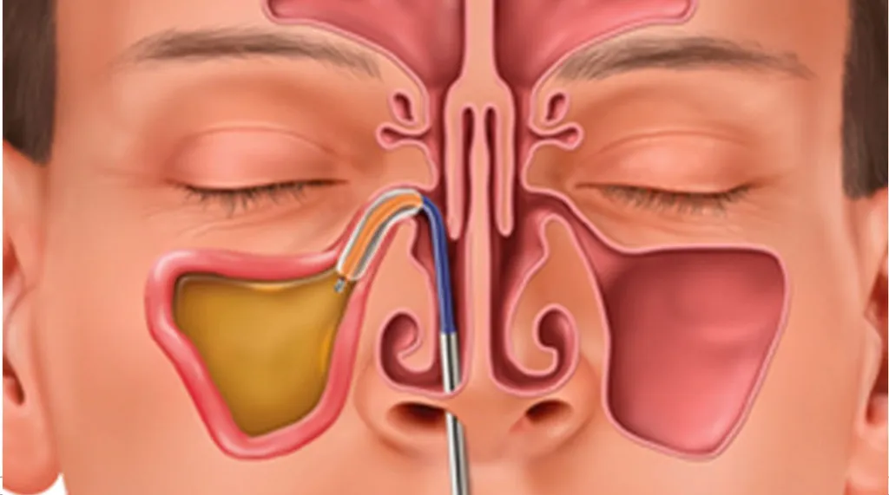

What is Balloon Sinuplasty?
Balloon sinuplasty is a minimally invasive procedure to open blocked sinuses. Learn how it works, side effects, recovery time, and cost from Capital ENT's sinus specialists in Austin, TX.
Read More
Answers to the most common ear, nose, sinus, throat, allergy, and sleep questions — written by Capital ENT's board-certified otolaryngologists in plain language you can actually use.

Balloon sinuplasty is a minimally invasive procedure to open blocked sinuses. Learn how it works, side effects, recovery time, and cost from Capital ENT's sinus specialists in Austin, TX.
Read MoreLearn what sleep apnea is, the three types, risk factors, serious health complications, and treatment options including CPAP and surgery from Austin ENT specialists.
Read MoreSuffering from cedar fever in Austin? Capital ENT & Sinus Center offers effective allergy treatments to help you breathe again. Schedule an appointment today.
Read MoreIs mouth taping safe for snoring and sleep apnea? Capital ENT reviews the peer-reviewed evidence on mouth taping, who may benefit, and why ENT evaluation matters first.
Read MoreNo articles match your search.
Our board-certified otolaryngologists see patients at four convenient Central Texas locations. Same-day and next-day appointments are often available.